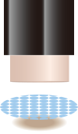
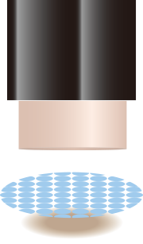

コンセプト
ピンポイントでシミを狙うスティック
濃密に留まり、コウジ酸を効かせる。
もう、濃いシミをつくらせない。
ぜったい許せないシミを、一点集中で狙い撃つ。
コスメデコルテ初の、コウジ酸美白スティックがうまれました。
シミを防ぎたいところを正確にケアできる、操り出し型のスティックタイプ。
クルクルクルと塗るだけで、バックのように長時間肌に密着して、
美白有効成分コウジ酸をじっくりと、
シミのもとをつくる根源細胞、メラノサイトに届かせます。
美白の常識を塗り変えて、
今こそ、白さ輝く肌へ。

配合成分
美白有効成分・コウジ酸
早いタイミングでアプローチし、
メラニン生成を断固ストップする。
コウジ酸の美白アプローチは、メラノサイトに働きかけ、メラニン生成にスイッチを入れる酵素、チロシナーゼの活性を抑制します。チロシナーゼのなかにあり活性を司る銅イオンを奪い取り（キレート）、チロシナーゼの動きを止めて強力にメラニン生成を阻害します。コウジ酸の発見は100年ほど前。日本酒・しょうゆ・味噌などに使用される「コウジ（麹）」の発酵過程でつくられる天然物質です。
お酒の醸造現場で働く人の手が白くきれいなことから研究がスタートし、1988年に当時の厚生省より医薬部外品の美白有効成分（美白主剤）として許可されました。
スティック状
スティック状だから、
気になる部分を確実に狙える
ピタッと濃密に肌についてシミ発生源へ、コウジ酸を届けます。

